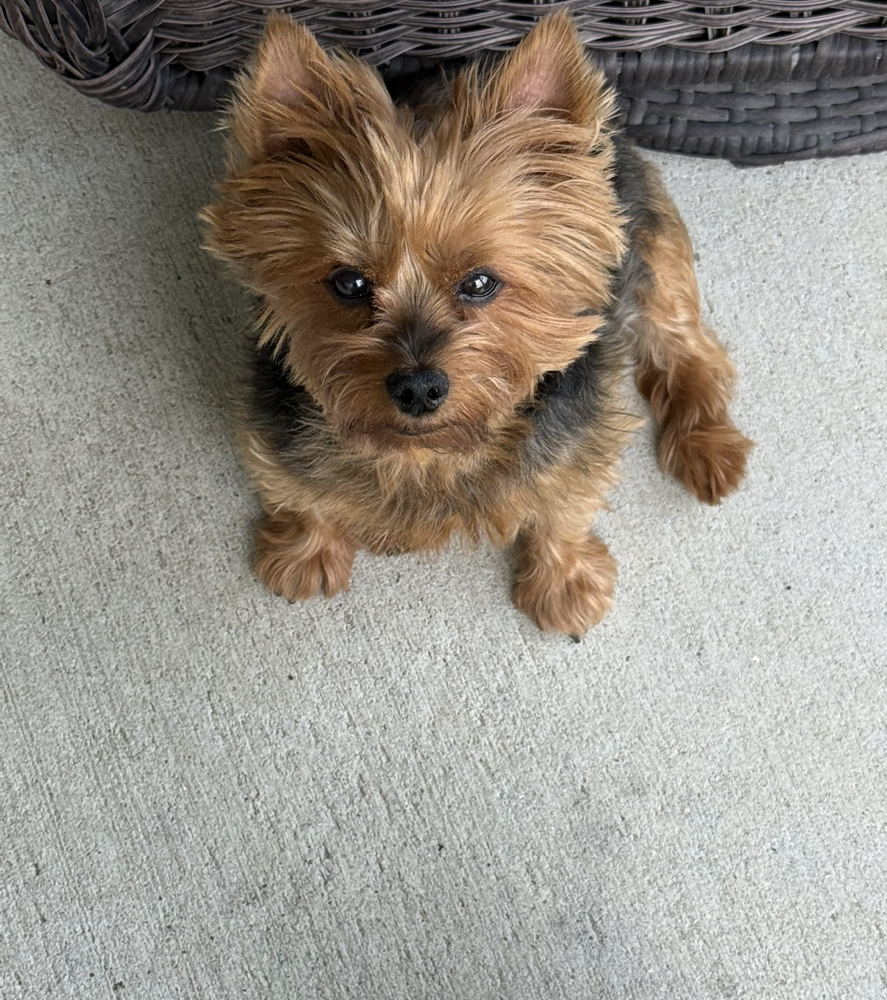

This is my personal website! I am a senior Computer Science student who spends most of my waking hours fueled by coffee and turning fresh ideas into working software. My favorite things to do are hiking, reading, and programming—though figuring out complex problems is half the fun, which always keeps life interesting.
In my free time, when I am taking a break from screen time, I love kicking back with video games, catching up on the latest movies, or exploring new creative hobbies. I also like to spend time with my dog, Zachary. I am always trying my best to learn new skills, pick up modern frameworks, and stay curious about web development and emerging technologies.
I am also a massive sports fan and love watching football. Right now, I am following the early rounds of the UEFA Champions League. While there are plenty of fun teams to watch like AC Milan, Liverpool and Bayern Munich, my heart belongs to Real Madrid. They are my absolute favorite team, and I am fully expecting them to bring home the Champions League trophy again this year!
If you wish to explore my professional background, you can view my LinkedIn Profile.
This is my dog—he is a Yorkie named Zachary! He likes to bark for food and attention. Although he can be stubborn at times, he is a loyal and loving companion.

| Language / Tool | Proficiency | Primary Usage |
|---|---|---|
| C++ | Advanced | Algorithms, Data Structures, Machine Learning |
| Python | Intermediate | Scripting, Data Analysis, Machine Learning |
| SQL | Intermediate | Database Management & Queries |
| HTML / CSS / JavaScript | Intermediate | Web Development & UI Design |